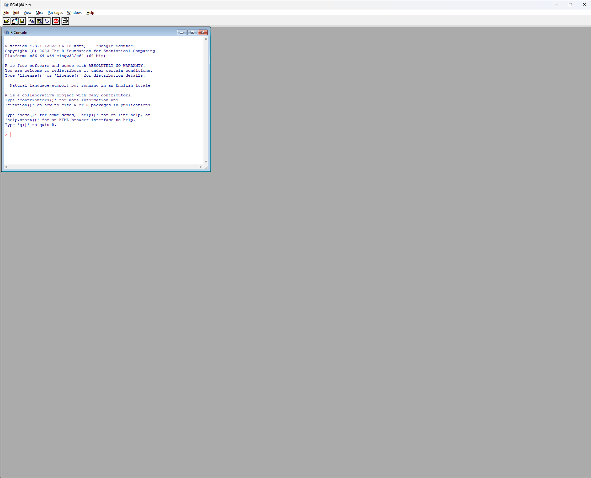
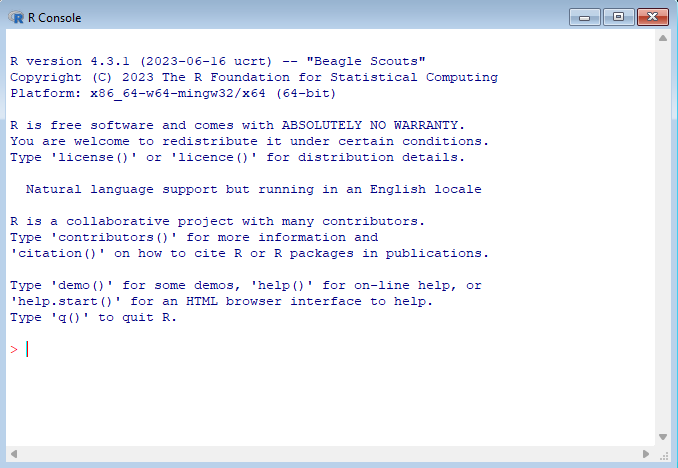
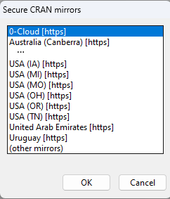
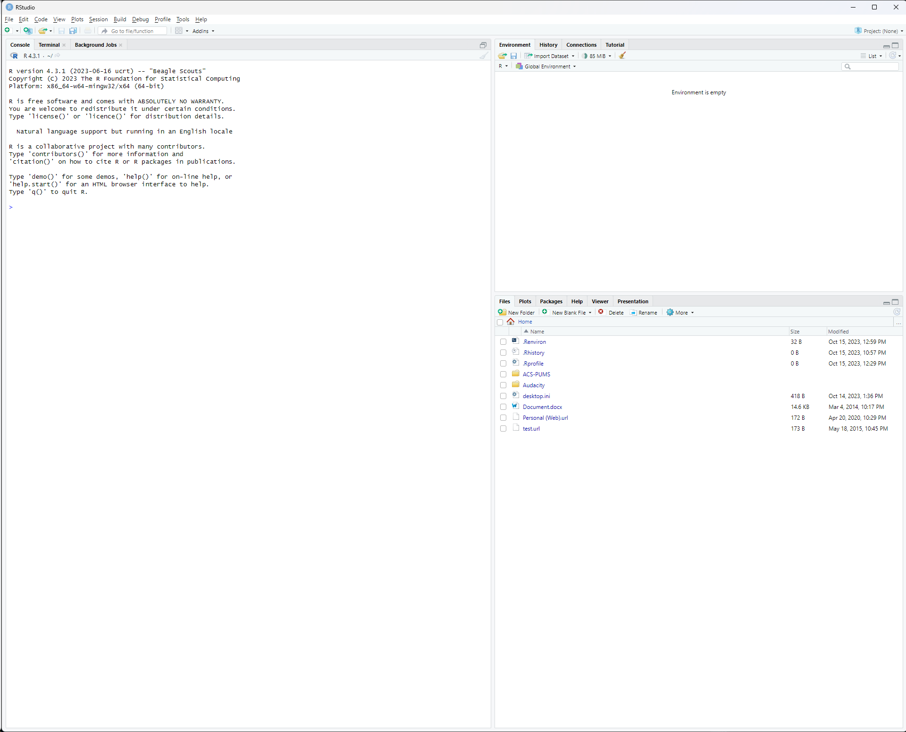
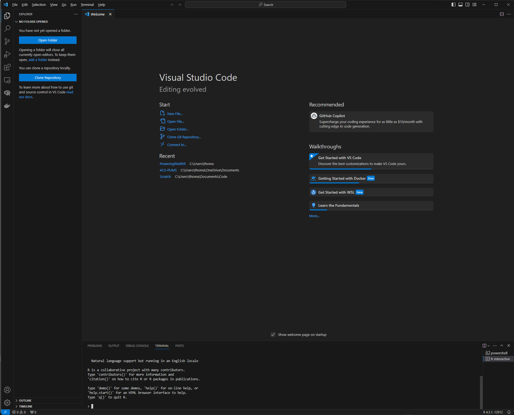

1 + 1[1] 2First, we’ll want to install the R software (R Core Team 2023). Go to https://r-project.org and follow the download link.
That will take you to the Comprehensive R Archive Network, or CRAN, which is “a network of servers that store identical, up-to-date, versions of code and documentation for R.”
The closest CRAN mirror for Institutional Researchers working in Ohio is hosted by Case Western Reserve University. Its web address is https://cran.case.edu.
Choose the distribution appropriate for your operating system under “Download and Install R,” then click on the link for “install R for the first time,” and then finally the larger “Download R…” link. Accept the licenses and the default settings.
You should now be able to find R listed among your installed programs. Go ahead and run it. You should see a screen like this:

The inner window is the R Console, also called the R Terminal, which is the R software interface:

Let’s run our first command. Since R is statistical software after all, let’s use it as a calculator. Enter 1 + 1 and press Enter. You should see the following:
1 + 1[1] 2Congrats, you’ve run your first R command!
Though base R contains all kinds of helpful functions and tools, installing R packages provide additional functionality.
CRAN includes both the base R system and an array of approved R packages.
One such package that we’ll be using is tidyverse, a collection of R packages that make data analysis in R better. We’ll learn more about tidyverse in Chapter 2.
To install the package, run the following command in the terminal:1
install.packages("tidyverse")Note that the package name must be in quotes ("") in the install.packages() command.
When you first install an R package in a session, you will be prompted to choose a CRAN mirror, like you did when you first downloaded R:

We’ll choose USA (OH) [https], which is the mirror hosted in Ohio by Case.
See Section 1.6.5 for details on how to set your default CRAN repository.
We’ll install additional packages later.
Accessing R in the basic R terminal is fairly limited, so we can close out of the program (or enter the q() command). R will ask you if you’d like to save the workspace image - just click “No”.
The better way to work with R is to use an integrated development environment, or IDE. The IDE includes the R Terminal that will show the R output, but also additional helpful features like a file editor (to work with a script), a file browser, an image viewer (to view graph and other figure output), an R object viewer, R help text, and more.
One popular IDE for R is the open source edition of R Studio, developed by posit, a company that contributes greatly to various R packages and tools, including Quarto which we’ll use in Chapter 4. It can be downloaded at https://posit.co/products/open-source/rstudio/.
After you install and run for the first time, and let it detect the installation of R, your screen should look like this:

One popular alternative to R Studio is Visual Studio Code. Visual Studio Code, or VS Code, is developed by Microsoft, and designed for a wide range of programming languages, supported by many extensions. Visual Studio Code’s source code is open source, but has additional Microsoft capabilities.2 Head to https://code.visualstudio.com to download Visual Studio Code.
Since Visual Studio Code is designed to work with many languages, you’ll need to complete additional steps to configure VS Code for working with R. For this reason, it may be best to begin using R Studio and revisit VS Code at a later time. However, VS Code does include additonal features and better integration with Git and GitHub, which will be detailed in Chapter 5.
You’ll then need to install the R extension for Visual Studio Code which can be done using the Extensions module on the far left (or using Ctrl+Shift+X). You’ll also need to install the langugageserver package and want to install the httpgd package so that Visual Studio Code can display help text and plots, respectively. Refer back to Section 1.3 for details how to install packages.
Depending on how you installed R, you may need to point Visual Studio Code to your R installation. Enter Settings (File > Preferences > Settings or Ctrl+,) then type or look for RTerm for your operating system. Point this to your instance of R (e.g. C:\Program Files\R\R-4.3.1\bin\R.exe).

Irrespective of the IDE you are using, you’ll use folders on your computer to hold a file or set of files for an R project. Go ahead and create a new folder in a location on your computer, such as Documents\MyFirstRProject\.
Depending on your IDE, you’ll open your project by:
In R Studio, you’ll first click on “Project: (None)” in the upper right, then “New Project”, then “Existing Directory”, then point to the folder you created.
In VS Code, you’ll click “Open Folder” from the Welcome screen.
If you end up with a lot of files, you can create folders within your project folder. This can help keep your project organized.
Up until now, we’ve entered commands directly into the R terminal. But much of the power of using R comes from writing many lines of code that work together.
To do this, we can create files that contain such code, as scripts.
Create a new .R file in your project folder. You can call it anything you’d like, such as script.R. By using the .R (or .r) extension, you’re indicating that the file is an R script.
At the top of the file we want to load any R packages that we’ll be using. We do this with the library() function. Let’s load tidyverse, then run our code (by clicking the Run button):
script.R
library("tidyverse")── Attaching core tidyverse packages ──────────────────────── tidyverse 2.0.0 ──
✔ dplyr 1.1.3 ✔ readr 2.1.4
✔ forcats 1.0.0 ✔ stringr 1.5.0
✔ ggplot2 3.4.4 ✔ tibble 3.2.1
✔ lubridate 1.9.3 ✔ tidyr 1.3.0
✔ purrr 1.0.2
── Conflicts ────────────────────────────────────────── tidyverse_conflicts() ──
✖ dplyr::filter() masks stats::filter()
✖ dplyr::lag() masks stats::lag()
ℹ Use the conflicted package (<http://conflicted.r-lib.org/>) to force all conflicts to become errorsNotice that the output shows the exact packages loaded as part of tidyverse. Not all packages have an output, but many do display some helpful information. The conflicts section notes that certain functionality from base R (stats) is masked by the packages loaded. This means when we run a function like filter(), by default it will now use the version from dplyr, which is part of tidyverse. We can always explicitly run a certain version by entering a function in the format package::function(), like stats::filter().
Note that we never include an install.packages() command in our R script, only in the terminal. We don’t want to modify our computer using our script, and this is espeically important when we get to sharing code!
Now we can add additional code to the script. Let’s create a new object my_fav_number and assign it the value of 2. We’ll then ask the system to print out that object, so that we can see the value. Don’t worry, we’ll go over exactly what is happening here in Chapter 2.
script.R
library("tidyverse")
my_fav_number <- 2
print(my_fav_number)Finally, let’s add notes to ourselves so that we can remember what our code is doing. To do this, we use comments. In R, comments are denoted by the # symbol. When R encounters a # symbol, everything in the same line after that symbol is ignored when running the code. We always add a space between the # symbol and the text we’d like to use as a comment.
We can use comments at the end of a line of code to describe what is happening in that line, and we can write a comment as a whole line in the code to show what is happening in sections of code:
script.R
# load libraries
library("tidyverse")
my_fav_number <- 2 # 2 is my favorite number
print(my_fav_number) # print out the stored valueNow that we’ve written our first R script (!), we can run it. We can either run the entire script at once, or walk through the code line-by-line with Shift-Ctrl. Walking through code line-by-line can be a great way to develop code and test as you go. You should see the terminal return:
[1] 2A few notes about keeping your code clean:
We’ll go over additional notes about writing clean code in the coming chapters.
In Chapter 2 we’ll use the package readxl to read in data from Excel files, since IR professionals often encounter data we need to work with in Excel files! How would you install the readxl package?
install.packages("readxl")Start a new R script that loads the readxl package. Include a comment to remind you of what is happening.
# load libraries
library("readxl") # to read data from Excel filesIn the R terminal, run:
update.packages()Packages with new updates will be detected and you will be prompted to respond Y or yes to accept.
If you want all packages updated without your confirmation, you can add the ask = FALSE argument:
update.packages(ask = FALSE)You will see a warning when packages are built under a different version of R than you are running. If you see this, you likely want to update your version of R.
The installr package can assist with keeping the R installation up-to-date. In the terminal, run the following:
installr::updateR()You will be prompted as to whether you’d like to copy over all packages from the current version of R. This is a good idea!
R will read certain options from special files that you can modify:
Your R profile can contain a range of settings to customize how you interact with R.
The usethis package can be used to edit your R profile:
usethis::edit_r_profile()A new window will open with your R profile file that you can edit.
For example, you may want to set your default CRAN mirror to the one hosted at Case, since it is in Ohio and you may be as well. Add the following line to your R profile file:
.Rprofile
options(repos=c(CRAN="https://cran.case.edu/"))When done, save the file, then close all R terminals and reopen them.
The R environment can store variables that you can call upon using special R functions. It is a great way to keep keys and other secrets out of your code but still accessible.
The usethis package can be used to easily edit your R environment:
usethis::edit_r_envrion()To store a variable named test_var, add the following to the file:
.Renviron
test_var:"this is my test value"When done, save the file, then close all R terminals and reopen them.
You’ll be able to access such variables like so:
Sys.getenv("test_var")[1] "this is my test value"Some packages request that you store things like API keys as specified environment variables. You can also use this to store common URLs, including FTP sites, but keep in mind that they are accessible directly in the .Renviron file on your computer.
Yes, you can also use the menus to install packages, but we won’t be using this interface for long.↩︎
Check out https://vscodium.com for a version without these Microsoft customizations.↩︎